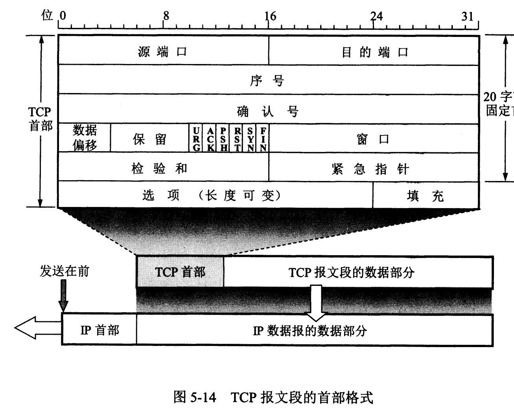

TCP 和 UDP*
数据段 Segment
UDP (User Datagram Protocol)*
UDP 是无连接，尽最大可能交付，没有拥塞控制，面向报文（对应用程序传下来的报文不合并也不拆分，只添加 UDP 首部），支持一对一、一对多、多对一和多对多的交互通信。
首部(8)：源端口(2)、目的端口(2)、长度(2)、校验和(2)。
伪首部(12)：源 IP 地址(4)、目的 IP 地址(4)、0(1)、17(0)、UDP 长度(2)，伪首部仅用于计算校验和而临时添加。
TCP (Transmission Control Protocol)*
TCP 是面向连接的，提供可靠交付，有流量控制，拥塞控制，提供全双工通信，面向字节流（把应用层传下来的报文看成字节流，把字节流组织成大小不等的数据块），每一条 TCP 连接只能是点对点的。

- 序号(4)，对字节流进行编号。
- 确认号(4)，期望收到的下一个报文的序号。
- 数据偏移(4)，数据部分距离报文段起始处的偏移，实际是指首部长度。
- 状态控制码 flags：
- URG：紧急，URG = 1 表示紧急指针字段有效，代表该封包为紧急封包。相当于高优先级的数据。
- ACK：确认，只有 ACK = 1 时确认好才有效，连接建立后所有传送的报文段都必须把 ACK 置 1。
- PSH：push，PSH = 1 表示要求对方立即传送缓冲区内的其他对应封包，而无需等缓冲满了才送。
- RST：复位，RST = 1 时，表明 TCP 连接出现差错，必须释放连接，然后再重新建立连接。
- SYN：同步，连接建立时用来同步序号。SYN = 1, ACK = 0 是一个连接请求报文段，若对方同意建立连接，则相应报文中 SYN = 1, ACK = 1。
- FIN：终止，用来释放一个连接，FIN = 1 表示报文段的发送方的数据已发送完毕，并要求释放连接。
- 窗口，窗口值作为接收方让发送方设置其发送窗口的依据。
TCP 三次握手*
A 为客户端，B 为服务端：
- B 处于监听状态，等待客户端的连接请求；
- A 向 B 发送连接请求报文，SYN = 1, ACK = 0，选择一个初始序号 x；
- B 收到连接请求报文，如果同意建立连接，则向 A 发送连接确认报文，SYN = 1, ACK = 1, ack = x + 1，同时也选择一个初始序号 y；
- A 收到 B 的连接请求报文后，还要向 B 发出确认，确认好为 y + 1，序号为 x + 1；
- B 收到 A 的确认后，连接建立。
三次握手的原因：
- TCP 想在不可靠信道上建立可靠传输，三次通信是理论最小值。
- 双方都需要确认对方收到了自己发送的序列号，确认过程最少要进行三次通信。
- 为了防止失效的连接请求到达服务器，让服务器错误打开链接。 客户端发送的连接请求如果在网络上滞留，那么会在很长一段时间后才能收到服务端发回的连接确认。客户端等待一个超时重传时间后，就会重新请求连接。这个滞留的连接请求还是会到达服务器，如果不进行三次握手，服务器就会打开两个连接。如果有第三次握手，客户端会忽略服务器之后发送的对滞留连接请求的连接确认，不进行第三次握手，因此就不会再次打开连接。
TCP 四次挥手*
A 为客户端，B 为服务端：
- A 发送连接释放报文，FIN = 1；
- B 收到后发出确认，此时 TCP 属于半关闭状态，B 能向 A 发送数据但 A 不能向 B 发送数据；
- 当 B 不再需要连接时，发送连接释放报文，FIN = 1；
- A 收到后发出确认，进入 TIME_WAIT 状态，等待 2 MSL（最大报文存活时间）后释放连接；
- B 收到 A 的确认后释放连接。
四次挥手的原因：
- 客户端发送了 FIN 连接释放报文之后，服务器收到了这个报文，就进入了 CLOSE_WAIT 状态。为了让服务器发送还未传送完毕的数据，传送完毕之后，服务器会发送 FIN 连接释放报文。
- 客户端接收到服务端的 FIN 后进入 TIME_WAIT 状态，而不是直接关闭，还需要等待 2 MSL 才关闭：
- 为了确保客户端的最后一个确认报文到达服务器，如果 B 没收到 A 发送来的确认报文，会重新发送连接释放请求报文，客户端再重传确认报文，重新计时。
- 为了让本连接持续时间内所产生的所有报文都从网络中消失，使得下一个新的连接不会出现旧的连接请求报文。
TCP 可靠传输*
TCP 使用超时重传实现可靠传输：如果一个已经发送的报文段在超时时间内没有收到确认，就重传这个报文段。
一个报文段从发送再到接收到确认所经过的时间称为往返时间 RTT，加权平均往返 RTTs 的计算如下：
RTTs 随着 a 的增加更容易受到 RTT 的影响。
超时时间 RTO 应该略大于 RTTs，TCP 使用的超时时间计算如下：
RTTd 为偏差的加权平均值。
TCP 流量控制*
流量控制是为了控制发送方发送速率，保证接收方来得及接收。发送方和接收方各维护一个窗口，接收方通过 TCP 报文段中的窗口字段告知发送方自己的窗口大小，发送方根据这个值和其他信息设置自己的窗口大小。
TCP 拥塞控制*
拥塞控制是为了降低整个网络的拥塞程度。
TCP 通过四个算法进行拥塞控制：慢开始、拥塞避免、快重传、快恢复。
发送方维护一个拥塞窗口 cwnd 状态变量。实际决定发送方能发送多少数据的发送方窗口。
慢开始与拥塞避免：
发送的最初执行慢开始，令 cwnd = 1，发送方只能发送一个报文段；收到确认后，将 cwnd 加倍，以指数增长。设置一个慢开始门限 ssthresh，当 cwnd >= ssthresh 时，进入拥塞避免，每轮只将 cwnd + 1。如果出现超时，令 ssthresh = cwnd / 2，然后重新执行慢开始
快重传与快恢复：
接收方每次收到报文段都对最后一个已收到的有序报文进行确认。发送方如果收到了三个重复确认，则立即重传写一个报文段。这种情况只是丢失个别报文段，而不是网络拥塞。因此执行快恢复，令 ssthresh = cwnd / 2，cwnd = ssthresh，直接进入拥塞避免。
慢开始和快恢复的快慢指的是 cwnd 的设定值，而不是增长速率。
TCP 四种定时器*
TCP 使用四种定时器
-
重传计时器 Retransmission Timer
报文段等待确认报文的时间，计时器超时将重传报文，重传报文为 2 * RTT。
动态计算 RTT 时不考虑重传报文的 RTT，因为无法确定收到的确认是对上一次报文段的确认还是对重传报文段的确认。
-
坚持计时器 Persistent Timer
主要解决零窗口大小通知可能导致的死锁问题。
死锁问题的产生：当接收端的窗口大小为 0 时，接收端向发送端发送一个零窗口报文段，发送端即停止向对端发送数据。此后，如果接收端缓存区有空间则会重新给发送端发送一个窗口大小，即窗口更新。但接收端发送的这个确认报文段有可能会丢失，而此时接收端并不知道已经丢失并认为自己已经发送成功，则一直处于等待数据的状态；而发送端由于未收到该确认报文段，就会一直等待对方发来新的窗口大小。
发送端收到接收端发来的零窗口通知时，就会启动坚持计时器。计时器超时时，发送端就会主动发送一个特殊的报文段告诉对方确认已经丢失，必须重新发送。探测报文段只有一个字节大小，只有一个序号，不需要确认。
计时器时间一般设置为重传时间的值，如果没有收到接收端的响应，会发送另一个探测报文段，并将计时器的值加倍，直到大于阈值（一般为 60s），直到窗口重新打开。
-
保活计时器 Keeplive Timer
每当服务端收到客户端的数据，将保活计时器重置，一般为 2 小时。过了 2 小时，服务端未收到客户端的数据，会发送探测报文段，每个 75s 发送一个，连续发送 10 次后，仍没有收到对端的来信，则终止连接。
-
时间等待计时器 Time_Wait Timer
四次挥手，客户端收到了来自服务端的 FIN 报文段后向服务端发送确认报文，并进入 Time_Wait 状态。等待 2 MSL 之后确保最后的确认报文到达服务端。
MSL RTT 和 TTL*
MSL Maximium Segment Lifetime，报文最大生存时间，任何报文在网络上存在的最长时间，超过这个时间报文将被丢弃。
TLL Time to Live，生存时间，由源主机设置初始值，指定了 IP 数据报可以经过的最大路由数。
RTT Round-trip Time，客户端到服务端往返所花时间，动态计算。